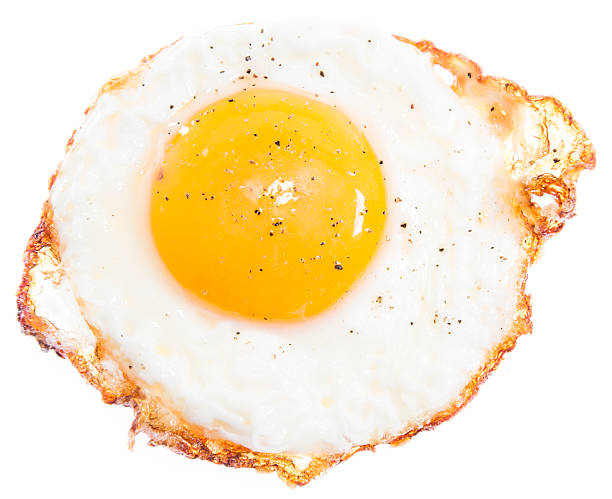

Fried Egg

Description
Place skillet under the hot broil and cook
until cheese is golden and bubbly, 3 to 5 minutes.
Ingredients:
- Olive oil
- Good Egg
- Salt & pepper to taste
Directions:
-
For sunny-side up:
In a small nonstick over medium heat, melt butter (or heat oil).
Crack egg into pan. Cook 3 minutes, or until white is completely set.
Remove from pan and season with salt and pepper.